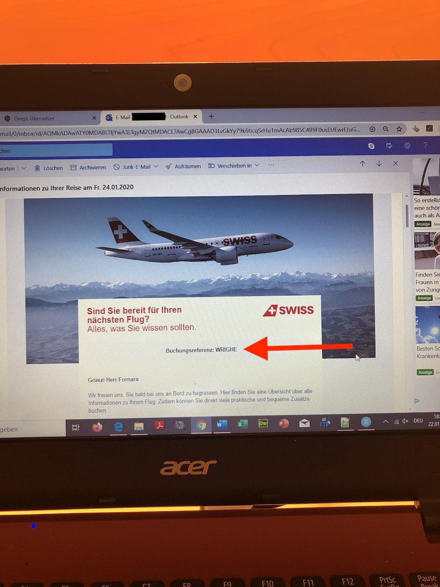

Chapter 9 Ferien
In diesem Kapitel geht es um das Thema Ferien, insbesondere zwei Phasen:
- Ferienplanung & -buchung,
- Vobereitung gebuchter Ferien,
9.1 Learnings & Heuristiken aus vergangenen Ferien
-
Allgemeine Organisation
:
- Online Zahlungen für lokale Attraktionen : Attraktionen mit Tickets passieren zunehmends online. Erstell dir einmalige Emailadresse mit Weiterleitung auf deine Hauptemail (Vivi macht das auch so).
- Bargeld : Nimm - bei jeder deiner Reisen - ein wenig Bargeld mit. Das kann praktisch sein für die Zahlung von Parkplätzen (es gibt viele Parkplätze, die z.B. keine Kartenzahlung erlauben.) oder für das Bezahlen in kleinen Souvenir-Läden (z.B. gibt es Läden, die keine Kreditkartenzahlungen ermöglichen).
- Hotel:
- Frühstück inklusive ist immer super: kein Stress am Morgen.
- Bemerkung: die Qualität des Frühstücks ist eine Wildcard…
- Frühstück inklusive ist immer super: kein Stress am Morgen.
- Essen:
- Um gute Restaurants zu finden, frage am besten das Hotelpersonal: wir haben sehr gute Restaurants empfohlen bekommen.
- Restaurant-Plätze ohne Reservation erhälst du (zu zweit) gut am 18:00 oder später ab ca. 20:30. Bei grösseren Gruppen immer Reservieren.
-
Für Kurzreisen mit Auto(< 7 Tage)
: Autofahrten max. 3.5h (ohne Stau).
- Geographisch gesehen, macht es Sinn, eher am Bodensee, Genfersee oder Vierwaldstättersee Urlaub zu planen, denn der Gardasee ist zu weit weg für Kurzferien (5.5h ’it Auto).
- Plane ein Zwischenstopp ein, falls du während des Tages in die Ferien reist und du weit weg fährst (so erholst du dich besser).
- Wenn du Tanken musst: Im Ausland steht für Benzin - aktuell (2026) - oft die “E5” (oder E4?) Bezeichnung (und zusätzlich sollte dann auch “Sans Plomb” bzw. “Senza Piombo” stehen). Ferien an Seen: Vorsicht vor Blaualgen, denn diese können beim Schlucken von Seewasser tödlich sein für Babys.
- Quelle (SRF Seen-Artikel, Juli 2027): https://www.srf.ch/news/schweiz/schweizer-gewaesser-und-hitze-so-warm-sind-die-schweizer-seen-aktuell
9.2 Ferienplanung & -buchung | Phase 1
In dieser ersten Phase geht es darum, dass du
9.2.1 Ziele
Hier die Kernfragen, die du beim Abschluss dieser Phase beantworten solltest:
-
Organisatorische Rahmenbedingungen der Reise:
- In- oder Ausland: in welches Land soll es gehen?
- Personen: Mit wem reist du in die Ferien (inkl. Anzahl Personen)?
- Datum: wann soll die Reise stattfinden (Abfahrts-Tag beim Start der Reise & Ankunfts-Tag bei der Rückreise)?
-
Internet: brauchst du ein WLAN-Paket von deinem Telefon-Anbieter, um Internet im Ausland zu haben?
- Wenn “ja”: Welches Angebot eignet sich am besten?
- Geld: welches Budget hast du für Reisen in diesem Jahr insgesamt und - falls du bereits Ferien genommen hast - wie viel Budget bleibt dir noch und welchen Anteile gehen an Flug / Hotels / Restaurants / Internet / sonstige Aktivitäten (Sehenswürdigkeiten, Parks, Ausflüge etc…)?
- Zwischen-Etappen: planst du, deine Ferien nur an einem Ort zu verbringen oder an Mehreren?
-
Bargeld & Revolut: wie viel Geld willst du “Bar” mitnehmen und wie viel auf deine Revolut-Karte?
- Bemerkung: Hängt auch davon ab, ob in einem Land bargeldloses Zahlen “normal” ist oder nicht.
-
Auto:
- Geld & vergangene Erfahrung: gibt es Kalender-Tage, an denen die Auto-Anreise besonders / teuer ist (z.B. zeitlich keine Staus bzw. “low-season” weil keine Ferien)?
- Abfahrtszeit festlegen: Fahre - wenn möglich - immer in der Nacht ab (ca. 19:00), denn die Strassen sind viel zu voll (wir haben im Mai 2026 während des Pfingswochenende 4h statt 2.5h gebraucht von der Schweizer Grenze bis zum Hotel in Lazise am Gardasee). Pass auf, dass das Hotel 24h Betrieb hat für das Checkin.
-
Falls du in den Süden fährst:
- Monitoring Gotthard (inkl. Sondersperrungen): https://www.tcs.ch/de/tools/verkehrsinfo-verkehrslage/gotthard-tunnel.php#anchor_Staukalender
- Learning aus Gotthard-Staus am Pfingst-Wochenende im Mai 2026 : wenn du in den Süden fahren willst in “Ferienhochsaison” (oder verlängerten Weekends wie z.B. Pfingsten) - dann ist schon ab 05:00 Uhr Morgens 10km Stau (und wächst dann auf 20km bis in den Nachmittag): https://www.srf.ch/news/schweiz/verkehr-am-pfingstwochenende-gotthard-stau-waechst-auf-rund-20-kilometer-an
- Monitoring Gotthard (inkl. Sondersperrungen): https://www.tcs.ch/de/tools/verkehrsinfo-verkehrslage/gotthard-tunnel.php#anchor_Staukalender
- Entscheid: welchen konkrete Auto-Route nimmst du (inkl. Rücksicht auf andere Personen)?
- Zwischen-Etappen einplanen bei längeren Reisen: Gibt es Zwischen-Etappen, bei denen du eine Pause einlegen kannst und sehenswert sind?
-
Tanken & Pneu-Prüfung am Vortag der Hinfahrt: Mindestens den Tank vollständig auffüllen und den Reifendruck prüfen (ideal sind ca. 2.1 bis 2.3 Bar pro Pneu).
- Aktuell unklar: Ab wann lohnt sich eine Auto-Vermietung?
-
Flug:
- Geld & vergangene Erfahrung: gibt es Kalender-Tage, an denen der Flug besonders günstig / teuer ist?
- Entscheid: welchen konkreten Flug nimmst du (inkl. Rücksicht auf andere Personen)?
- Flughafen-Ortschaft: An welchem Flughafen fliegt das Flugzeug ab und an welchem Flughafen landet das Flugzeug.
-
Vorlaufzeit für Hinfahrt: wie viel Zeit willst du dir nehmen, um das Checkin & die Flughafenkontrolle zu überqueren? Suche dir die richtige öV-Verbindung aus bzw. organisiere ein Fahrzug (eigenes Auto oder Taxi).
- Aktuell unklar: Ab wann lohnt sich eine Auto-Vermietung?
- Transport bei Ankunft: wann landest du und welcher Transportmodus wählst du bei der Ankunft? Suche dir die richtige öV-Verbindung aus bzw. organisiere ein Fahrzug (eigenes Auto oder Taxi).
-
Hotels:
-
Lage & Ort: In welcher Stadt & an welcher Adresse soll dein Hotel liegen?
- Bemerkungen:
- *Bei mehreren Etappen, musst du auch mehrere Hotels wählen und die jeweiligen Transportfragen (Modus: öV / Taxi / Auto), sowie Abfahrts- & Ankunftszeiten planen.
- Hotels immer relativ zum City-Center betrachten. Wenn du nur sehr kurze Zeit Ferien machst und dein Hotel weit Abseits vom City-Center liegt, ist es empfehlenswert, dein Gepäck in einem Schrankfach - beispielsweise an einem Bahnhof oder bei der Gemeinde - zu lassen, um keine Zeit (mehrere Stunden) zu verlieren und zum Hotel zu fahren, nur um das Gepäck abzulegen.
- Bemerkungen:
- Hotelklasse & vergangene Erfahrung: welche Qualität soll das Hotel haben (z.B. Kosten pro Nacht, Bewertungen anderer Gäste, Anzahl Sterne, Pool / kein Pool, Gym / kein Gym, etc…)
- Checkin 24/7 möglich?: Diese Frage ist besonders relevant, wenn du die Anreise mit dem Auto planst
- Frühstück inklusive buchen: so hast du kein Stress am Morgen.
- Entscheid: Welche(s) Hotel(s) wählst du?
- Checkout: ab wann spätestens muss du aus dem Zimmer raus sein am Abfahrtstag?
-
Lage & Ort: In welcher Stadt & an welcher Adresse soll dein Hotel liegen?
-
Ferien-Aktivitäten:
-
Planungszeitpunkt: sollen Ausflüge & Restaurants “spontan” vor Ort - via z.B. Tourismus-Guide (-> “Office du tourisme”) - oder bereits vor Reisestart geplant werden?
- Bemerkung: Es ist auch ein Mix aus beiden Strategien möglichn.
- Ausflüge: Wann willst du welche Sehenswürdigkeiten sehen und wie kommst du dorthin?
- Restaurants: Wie viele und welche Restaurants willst du besuchen (kann auch spontan passieren)?
-
Planungszeitpunkt: sollen Ausflüge & Restaurants “spontan” vor Ort - via z.B. Tourismus-Guide (-> “Office du tourisme”) - oder bereits vor Reisestart geplant werden?
-
Notfälle:
- Botschaft: Notiere dir die genaue Adresse der Botschaft deines Landes (französischen). Das ist nützlich bei Notfällen (falls du deinen Reisepass verlierst / gestohlen wird, falls du einen medizinischen Notfall hast etc…).
- Reiseversicherung: Notiere dir die genaue Telefonnummer deiner Reiseversicherung (falls du deinen Reisepass verlierst / gestohlen wird, falls du einen medizinischen Notfall hast etc…).
9.2.2 Nützliche Tools zur Beantwortung der obigen Kernfragen?
- Allgemein:
- Schweizer Bund, wenn du deine jährlichen Ferienplanung erstellt, insbesondere, wenn es Kriege / Konflikte auf der Welt gibt.
- Google Maps für Fahrpläne, Adressen, Flüge, Hotels oder Restaurants.
- Instagram-App für trendige Ferien-Desitationen, Restaurants oder Hotels.
- Polarstep-App für das eigene Tracking deiner Reise (inkl. Fotos).
- Youtube für die Attraktionen-Planung.
- Tipp: ich empfehle dir Youtube-Videos mit Titeln, wie zum Beispiel “Top 10
”. Dann kannst du dir diese in die Google Maps abspeichern. Für Zwischenstopps für Unterwegs, kannst du auch Chatbots brauchen: das hat mir ein gutes Restaurant in Ascona empfohlen.
- Tipp: ich empfehle dir Youtube-Videos mit Titeln, wie zum Beispiel “Top 10
- Frühstück im Hotel war super: so gabs kein Stress.
- Flug:
- Ebookers.ch
- Internet-Seite & App der Fluggesellschaft, mit der du fliegen wirst (für Checkin wichtig).
- Hotels:
- Restaurants:
- Tripadvisor-App für gut bewertete Restaurants.
9.2.3 Buchung des Fluges?
Hier wird beschrieben, wie du den Flug buchst.
9.2.3.1 How to do the Check-In mit der Swiss-App? | Nach der Zahlung
Du solltest nach der Bezahlung eine Email erhalten, wo deine „Buchungsreferenz“ steht, beispielsweise so:

Das ist ein Beispiel einer Buchungs-Referenz.
Diese Buchubgsreferenz musst du in der App unter „Reservierungs- / E-Ticketnummer“ eingeben und dann solltest du das Check-In erledigt haben! 😊

9.3 Vorbereitung gebuchter Ferien | Phase 2
In dieser Phase wird angenommen, dass du deine Ferien (inkl. Fluag & Hotel) bereits gebucht hast und es nun zur konkreten “Setup” der Reise übergeht, damit du sorglos in den Urlaub gehen kannst.
9.3.1 Ferien in Ausland (Japanreise 2025)
Du machst eine Reise ins Ausland? Hier erhälst du alle Tipps & Tricks, um dich optimal vorzubereiten.
9.3.1.1 Vorbereitung
- Pass-Gültigekeit kontrollieren (sollte bis mind. Ausreisedatum gültig sein, aber eventuell muss das Ablaufdatum auch weiter in der Zukunft liegen, je nach Land…)
-
Sonstige Einreisebedingungen des Lander, in dem du Ferien machst, beachten:
- Import von Ware aus dem Ausland in die Schweiz (z.B. max. 150 CHF pro Person darf Zollfrei importiert werden aus Japan).
- Um nach Japan einzureisen, mussten wir z.B. ein Einreiseformular online ausfüllen (und erhielten einen QR-Code, den wir am Zoll aufweisen mussten).
- Internet im Ausland einrichten (Empfehlung: E-SIM).
- Bargeld via Banking-App nach Hause bestellen (viele Läden akzeptieren weiterhin nur “Cash”).
- Virtuelles Geld auf Revolut-Konto überweisen, um bargeldlos zu zahlen.
-
Reiseversicherung abschliessen:
- Rega
- Europe Assistance (für eine Reise und für mehrere Personen).
- Reiseversicherung Mobiliar für ein ganzes Jahr.
- SOS144, das die Rega inkludiert.
- Leere Wohnung: Home-Sitter für deine leere Wohnung suchen.
- Für Handy & co.: Ladegerät-Typ prüfen (für genügend Akku).
- Parkplatz reservieren 1 Tag vor Abfahrt mit Auto: Hier die App (der TCS wirkt da mit, ist also “legit”): https://parcandi.com/ch-de/facility/71/59c40ed4-0063-f75d-36e6-6cca6362922b
- Flug: Check-In 24h vor Abflug (via App der Fluggesellschaft möglich).
- Nützliche Reise-Apps herunterladen, welche beim Reisen nützlich sind, hier einige Beispiele (Stand: 2025):

Nützliche Reise-Apps
9.3.2 Skiferien: Checkliste
Ich empfehle dir, folgende Dinge mitzunehmen & abzuklären:
9.3.2.1 Kleider & Ausrüstung
- Skischuhe
-
Ski
- Skischuhe (inkl. Ski) ins Décathlon bringen, damit er sie dir auf die Ski anpasst (Kosten: CHF 30)
- Skihose
- Skihelm
- Skibrille
- Skijacke
- Calleçon
- Ski-Socken
- Cagoule
- Handschuhe
- Winterpullis (2-3 pro Woche)
- T-Shirts
- “normale” Hosen
- “normale” Socken
- Unterhosen
- Kappe
- Winterstiefel
9.4 Vorbereitung zum Flug | Phase 3
9.4.2 Ankuft beim Flughafen am Ablugs-Tag
Hier der Ablauf:
- Falls du ein Baggage hast (kein Handgepäck), dann musst du zuerst so eine Flugbegleiter-Nummer an so einem Automaten selbser ausdrucken. —> wenn es ausgedruckt ist, klebe es auf deinem Gepäck.
- Gehe zur Gepäckübergabe. Dort wird das Gepäck gewogen und weggeschickt zum Flugzeug ✈️
- Dann gehe Richtung „Departure“ —> dein Ticket musst du dem Scanner zeigen und du wirst durchgelassen.
- Dann gehe durch den Zoll —> alle Flüssigkeiten in ein transparentes Täschchen tun & jede Flasche darf maximum 100ml enthalten.
- Wenn du durch den Zoll bist, suche auf der elektronischen Anzeige deinen Flug und schaue, auf welches Gate du gehen musst.
- Gehe zum Gate und warte, bis du einsteigen kannst ;)
9.5 Nach der Reise | Letzte Phase
- Kosten-Monitoring: empfehlenswert ist es, zu schauen, wie viel Geld deine Reise dich nun gekostet hat und wie viel Budget für zukünftige Ferien übrig bleibt.
- Fotos Ausdrucken: Drucke die Fotos aus und mache daraus einen eigenen Kalender, den du zu Weihnachten deiner Familie schenken kannst.
9.6 Spezialsituationen
9.6.1 Reisen in Kriegszeiten
Hier ein Artikel vom SRF (2026), der die Risiken & Hintergründe darlegt, damit du eine vernünftige Entscheidung fällen kannst:
- Kriegerische Ereignisse werden von Reiseversicherungen häufig ausgeschlossen.
- Welches Recht wird angewandt?
- Airlines und Reiseveranstalter unterliegen der Fluggastrechtsverordnung. Diese verlangt, dass Fluggesellschaften zum Beispiel bei Weiterreise- oder Übernachtungsmöglichkeiten unterstützen.
- Vorsicht : Die Fluggastrechtsverordnung gilt nur für europäische Fluggesellschaften. Entsprechend trägt der Reisende einen Teil des “Ferien in Kriegszeiten”-Risiko, insbesondere, wenn du mit “nicht EU”-Fluggesellschaften fliegst.
- Airlines und Reiseveranstalter unterliegen der Fluggastrechtsverordnung. Diese verlangt, dass Fluggesellschaften zum Beispiel bei Weiterreise- oder Übernachtungsmöglichkeiten unterstützen.
- Welche “Ferien im Krieg”-Szenarien gibt es?
-
Kurzfristig
:
- Was passiert, wenn - bei (plötzlichem) Kriegsausbruch - meine Reise kurzfristig annuliert wird und ich - theoretisch - meine Reise noch vor mich habe?
- Grundsätzlich hast du Anspruch auf Geld zurück oder Anspruch auf einen Ersatzflug – also auf eine andere Art ans Ziel zu fliegen. Das Gleiche gilt auch für Pauschalreisen: Wenn dort der Veranstalter die Reise annulliert, weil im Moment gar nicht geflogen werden kann, habe ich dort auch Anspruch, dass ich Geld zurückbekomme.
- Falls ich 2 Wochen davor selber storniere : du trägst das Risiko und musst allfällige Annullationskosten zahlen.
- Wer hilft, wenn du aufgrund eines plötzlichen Krieges im Ausland feststeckst?
- Wenn du direkt bei der Fluggesellschaft gebucht hast : warte auf die entsprechenden Informationen. Die Fluggesellschaft ist verantwortlich dafür, dass sie dich beim Weiterflug und Übernachtungen unterstützt.
- Wenn du hingegen via einer Reiseveranstaltung gebucht hast : wenn du mit einer Pauschalreise unterwegs bin, hast du den Vorteil, dass die Veranstalter gemäss Gesetz dazu verpflichtet sind, dir zu helfen.
- Was passiert, wenn - bei (plötzlichem) Kriegsausbruch - meine Reise kurzfristig annuliert wird und ich - theoretisch - meine Reise noch vor mich habe?
-
Langfristig
:
- Der Krieg ist im Gange und ich buche eine Reise, die über das Kriegsgebiet geht : Hier trägst du das Risiko selbst (und nicht die Airline / der Reiseveranstalter), weil ja bekannt ist, dass dieser Krieg ausgebrochen ist.
-
Kurzfristig
:
9.6.2 Abgeleitete Heuristiken
- Wenn du Reisen planst, die über / in der Nähe von Kriegsgebieten verläuft, ist von Ferien im Zielland abzuraten und das Ende des Krieges abzuwarten, insbesondere auch, weil…:
- Die Reiseversicherungen Kriege nicht versichert.
- Das Risiko, dass dein Flugzeug von einer Rakate abgeknallt wird, nicht 0% beträgt.
- etc…
9.7 Analyse vergangener Ferien
Hier analysieren wir vergangene Ferien und leiten daraus allgemeine Learnings ab (siehe ganz oben).
9.7.1 Kurz-Weekend: Gardasee-Reise (Mai 2026)
- Preislich war das Hotel teuer: 640.- für 3 Tage (ungefähr war 106.- pro Nacht, pro Person). Wir konnten jedoch - wegen den eingeplanten Attraktion - den Pool kaum geniessen. Zudem waren alle Leute beim Pool sich am beobachten, was es nicht angenehm machte, denn man fühlte sich ein wenig beobachtet. Nächstes mal nimmst du lieber ein günstigeres Hotel an der Nähe des Wassers und gehst dort baden. Mache dafür jedoch Wellness Weekends, wenn du ein Pool geniessen möchtest.
-
IST-Ferienbudget (ex post)
:
- Hotel: 630
- Restaurants (Mittags + Abends): 60 + 74.30 + 87 + 90 + 28 + 40 + 20 + 16.10 + 13.5 = 428.90
- Ausflug-Aktivitäten: 26
- Tanken (850km): 45 + 50 + 21.65 = 116.65
- Mautstellen (850km): 12 + 13.8 + 2.5 + 6.5 + 2.5 = 37.3
- Parkplätze (Ausflüge): 18 + 12 + 8.5 = 38.5
- Verpflegung für Unterwegs (z.B. Wasser oder Snacks): 4 + 18 = 22
- Souvenirs: 26.85
- Total ohne Hotel: 695.15
- Total (inkl. Hotel): 1’310
- Im Sommer empfiehlt sich, einen Isolations-Schutz für die Frontscheibe im Auto zu platzieren.
- Nimm ein wenig Bargeld mit, das kann praktisch sein für Parkplätze, die z.B. keine Kartenzahlung erlauben.
9.8 Events & Aktivitäten | Beispiele für die Freizeit
Es folgt eine Liste an Vorschlägen von Aktivitäten & Events, die wir in der Vergangenheit gemacht haben und dich inspirieren könnten:
9.8.1 Freizeitaktivitäten in der Schweiz
9.8.1.1 Sommer
- Konzerte,
- Badi
9.8.1.1.1 Paddle
- Ort (inkl. Miete möglich!): Sportanlage Sonnenberg (in der Nähe vom Dolder)
- Kontakt:
- Email: info@sportanlage-sonnenberg.ch
- Telefon: +41 (0)44 254 20 90
- Google Maps: https://maps.app.goo.gl/68sDt71LZkK9Wm4z6?g_st=com.google.maps.preview.copy
- Webseite: https://www.sportanlage-sonnenberg.ch/padel-sonnenberg/
- Spielregeln: https://www.sportanlage-sonnenberg.ch/traglufthalle/padel-tennis-anlage/
–> Lies dich ein und schreibe eine Email mit Anfrage, ob es möglich ist für 4 Personen (nich Vereinsmitglieder) das zu machen. Es muss nicht zwingend in diesen Ferien sein, aber so hat man es versucht :)
9.8.1.1.2 Go Kart (Winterthur)
- Ort: Steigstrasse 5, 8406 Winterthur
- Google Maps: https://maps.app.goo.gl/ecjKtAcCrrV9eegL7?g_st=com.google.maps.preview.copy
- Preise: https://winterthur.kart.ch/karting
9.8.1.1.3 Bootfahrt Genfersee
- Gemäss dieser Seite gibt es zwei Arten von Rundfahrten (ab Genf):
- Fahrt geht 8h
- Fahrt geht 1h
–> unklar ist, ob wir diese Bootsfahrt direkt mit unserem GA tätigen können oder ob man diese bezahlen muss.
9.8.1.1.4 Stoos Bergbahn (Kanton Schwyz)
- Ort: Mohrschach (quasi bei Schwyz)
- Google Maps: https://maps.app.goo.gl/khFJDonki7eX83Su5?g_st=com.google.maps.preview.copy
- Preise: https://www.stoos.ch/de/pages/preise-gipfel-erlebnisticket-tageskarte-sommer
–> die eine Bergbahn ist gratis für GA-Besitzer. Wenn wir die hohe Aussicht geniessen wollen, ist der Preis bei 56.- pro Person (Erwachsene).
9.8.1.1.5 Niesenbahn (beim Thunersee)
- Ort: Heustrichstrasse 12, 3711 Mülenen
- Google Maps: https://maps.app.goo.gl/XB7fDxvxmn1NLXgm7?g_st=com.google.maps.preview.copy
- Preise: https://www.niesen.ch/niesenbahn/fahrpreise/
- Rabatt für GA (32.- statt 64.- pro Person): “Mit dem GA bezahlen Sie wie mit dem 1/2-Abo den halben Fahrpreis.”
–> Öffnet jeweils um 08:00 Uhr morgens und schliesst - quasi immer - um 17:00 (Ausnahme am Samstag mit 19:30).
9.8.1.1.6 Verkehrshaus Luzern
- Preise: https://www.verkehrshaus.ch/de/ihr-besuch/besuch-planen/preise
- 62.- pro Person
- Google Maps: https://maps.app.goo.gl/tkN9CHsjahrScvT38?g_st=com.google.maps.preview.copy
–> es wird auf der Webseite empfohlen, die Tickets online zu kaufen (wegen langen Wartezeiten).